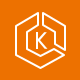
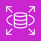
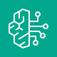

USER
웹 브라우저
대시보드 · 분석
백테스트 · AI 보고서
HTTP DEMO · TLS 권장
서울 리전의 애플리케이션 계층과 스톡홀름 리전의 Bedrock을 분리하고,
보고서·데이터·이미지는 목적에 맞는 관리형 서비스에 저장합니다.
대시보드 · 분석
백테스트 · AI 보고서
공인 엔드포인트와
상태 확인
RDS 비밀번호 → K8s Secret

Deployment · Service · Pod
검증된 Docker 이미지

일봉 · 스냅샷 · 메타데이터
AI 보고서 JSON

Kimi K2.5 평가 서술
로컬 서비스가 노출하는 토스증권 호환 조회 전용 API · 주문 엔드포인트 미사용